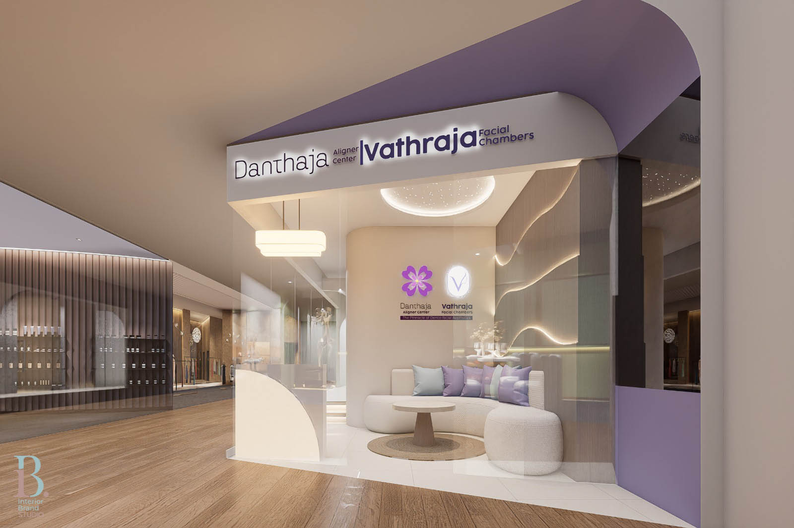
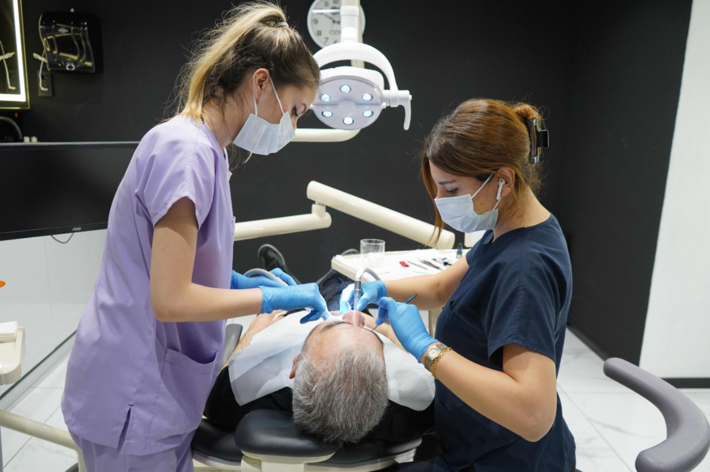

Specialist-Led Dermatology
Skin health consultations led by a Consultant Dermatologist, so concerns are assessed before they are treated.
Vathraja Facial Chambers brings together dermatology, facial aesthetics, injectables, and doctor-led cosmetic care in a premium clinical environment at One Galle Face, Colombo — for healthy skin, facial harmony, safety, and natural-looking confidence.
Our essence
Healthy skin. Harmonious features. Specialist care.
Vathraja Facial Chambers is built around clinical judgement. Every pathway is led by a consultant or doctor, and every plan starts by understanding your skin and your face as they actually are.
Skin health consultations led by a Consultant Dermatologist, so concerns are assessed before they are treated.
Facial aesthetics led by consultants and doctors, focused on safety, anatomy, balance, and natural-looking results.
A calm, private, and considered setting at One Galle Face, Colombo, with clinical standards rather than salon service.
An integrated relationship with Danthaja Aligner Center, so your face and smile journey can be planned as one.
Planning that begins with an assessment and sets out clear expectations, suitability, and aftercare before anything is agreed.
Five clinicians across three pathways — dermatology, facial surgical aesthetics and injectables, and doctor-led cosmetic procedures. Which clinician you see is decided at consultation, and the pathways work together where a concern spans more than one.
All treatment at Vathraja is consultant or doctor-led. We do not offer salon-style services, and suitability for any procedure is confirmed only after clinical assessment.
Consultant Dermatologist
SLMC 28417 · MBBS, MD (Dermatology), MRCP (UK)
Welcomes patients with skin, hair or nail concerns into a calm and supportive consultation, placing healthy skin first when recommending evidence-based options.
Consultant Dermatologist
MBBS, MD (Dermatology), Specialty Certificate in Dermatology
Offers a friendly and reassuring consultation, taking time to understand each concern and supporting healthier skin through medically guided care.
Consultant Oral and Maxillofacial Surgeon
SLMC 2197 · BDS, MD (OMFS), MFDRCS, FFDRCS (Ireland)
Listens to each patient’s oral, jaw or facial concerns and explains suitable options with clarity, placing safety, facial harmony and natural-looking results at the heart of treatment.
Consultant Oral and Maxillofacial Surgeon
BDS, MD (OMFS)
Offers a warm and thoughtful consultation for oral, jaw or facial concerns, guiding patients through a carefully planned pathway centred on safety and facial balance.
Dental Surgeon, special interest in facial aesthetics
SLMC 2439 · BDS (Sri Lanka)
Welcomes patients into a calm and private setting to speak openly about facial-aesthetic concerns and goals, supporting informed choices centred on comfort and natural-looking improvement.

Vathraja Facial Chambers sits within the Danthaja and Vathraja dentofacial aesthetics destination at One Galle Face. The space is private and unhurried, because a proper assessment takes time and because you should feel comfortable during a consultation.
How it works
A clear, four-stage path from first assessment to review, so you know what happens next at every point.
We begin with your history, your skin, your concerns, and your goals. Nothing is recommended before this is understood.
Your clinician explains what may help, what is unlikely to help, and what a realistic outcome looks like for you.
Options are confirmed only where they are clinically appropriate, with risks, alternatives, and aftercare set out.
You leave with written aftercare and a review point, so progress can be checked and the plan adjusted as needed.
Not sure which applies to you? That is exactly what the first consultation is for — we will guide you to the right pathway.
Diagnosis-first care for acne, pigmentation, sensitivity, scars, and ageing concerns.
Explore
Consultation-led planning around balance, proportion, and natural-looking refreshment.
Explore
Anatomy-led assessment of structure, goals, suitability, risks, and expected outcomes.
Explore
Medically responsible cosmetic care with clear assessment and realistic expectations.
Explore
Vathraja Facial Chambers and Danthaja Aligner Center share a dentofacial aesthetics philosophy. Where it helps, your skin, facial balance, and smile can be assessed together rather than in isolation.

Private consultation rooms, treatment spaces built to clinical standards, and an unhurried atmosphere at One Galle Face. The gallery shows the environment only — we do not publish patient photographs or before-and-after images.
Not every treatment suits every person. Your clinician reviews your medical history, medications, allergies, and previous treatments before confirming whether an option is appropriate for you — and will say so plainly if it is not.
A few of the questions we are asked most often. The full list covers suitability, results, and downtime.
Yes. A consultation helps identify your skin type, concerns, history, and suitable treatment options before anything is carried out.
It depends on your skin condition, goals, sensitivity, and previous treatments. We recommend an option after assessment rather than by name alone.
Some treatments may support acne-prone skin, uneven tone, and texture. Results vary between individuals, and some concerns may need a longer plan or referral for specialist management.
Some facials have little to no downtime. Stronger treatments may need aftercare and temporary changes to your products, and this is explained before treatment.
Begin with a conversation
Book a consultation at the Danthaja and Vathraja dentofacial aesthetics destination at One Galle Face, Colombo. Our team will help you understand your options, the right pathway, and what to expect.
Treatment outcomes vary by individual and require a professional consultation.